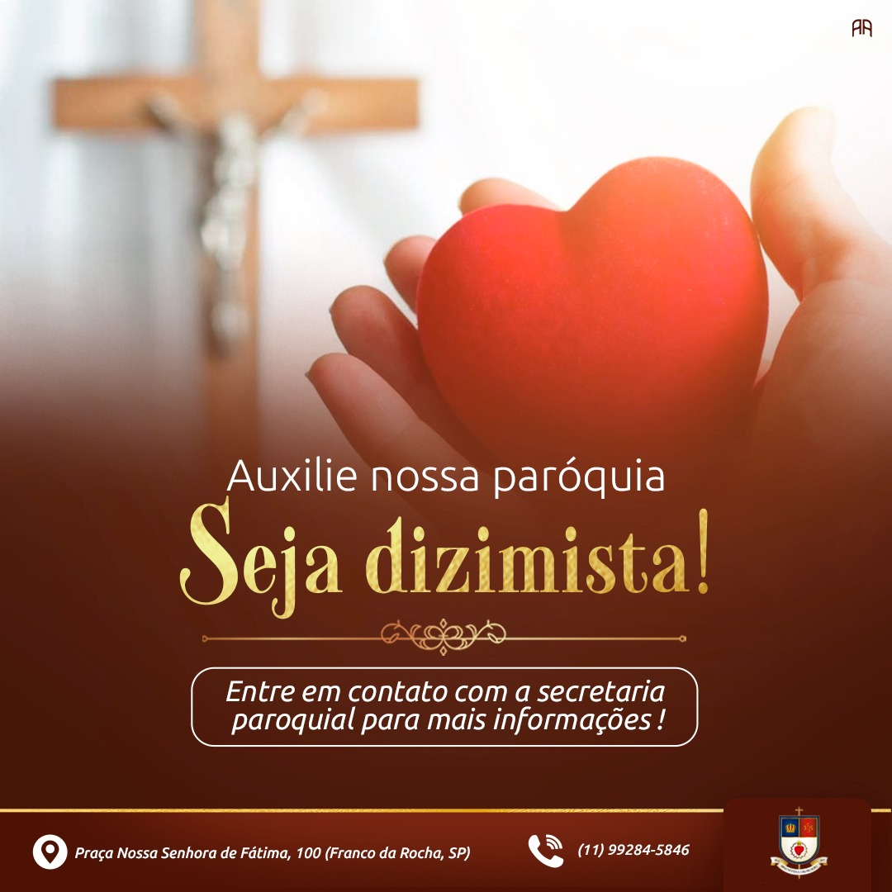

SEJAM BEM-VINDOS
Aqui você encontrará informações importantes para a sua vida de Fé e em Comunidade.
Paróquia Nossa Senhora de Fátima
Aqui você encontrará informações importantes para a sua vida de Fé e em Comunidade.
A Paróquia Nossa Senhora de Fátima foi fundada no dia 08 de Dezembro de 1977 e pertence à Diocese de Bragança Paulista.
Pároco - Pe. Diogo Rodrigues dos Santos Albuquerque

Aqui você encontrará todos os horarios da Nossa Paróquia e das nossas Capelas.
Sábados: (Igreja Matriz - Vila Ramos) 🕰️18:00 Domingos: (Capela Santo Antônio - Parque Vitória) 🕰️7:30 Domingos: (Capela São Jõao Batista - Pouso Alegre) 🕰️10:30 Domingos: (Igreja Matriz - Vila Ramos) 🕰️17:00
Quintas e Sextas-feiras: 15:00 às 17:00 Sábados: 11:00 às 12:00 Local: Igreja Matriz
Horários de atendimento:
Segunda á Sexta-feira 08:00 ás 12:00 - 13:00 ás 17:00
Sábados 08:00 ás 12:00
Leia e faça a sua Oração com as Leituras e com o Evangelho do dia!
Ajude a nossa Paróquia com o seu algo a mais. Contamos com você, para darmos continuidade nos trabalhos de Evangelização e em nossa estrutura paroquial.
45.613.668/0023-58
O Catecismo da Igreja Católica, no Parágrafo 1212, nos ensina que: "Através dos sacramentos da iniciação cristã – Batismo, Confirmação e Eucaristia são lançados os alicerces de toda a vida cristã."
Os Batismos, em nossa Paróquia, são realizados no 4° Domingo de cada mês. A ficha de inscrição está disponível na secretaria paroquial
Inscrever-seTemos turmas para a Catequese de crianças a partir de 9 anos de idade e para os adultos que ainda não receberam a 1° Eucaristia.
Inscrever-seTemos turmas para os adolescentes a partir dos 14 anos de idade e para os adultos que ainda não são Crismados.
Inscrever-seSobre qual dos assuntos abaixo você deseja falar conosco? Clique no ícone e entre em contato através do nosso WhatsApp. Estamos prontos para atendê-los.
“O dízimo é uma contribuição sistemática e periódica dos fiéis, por meio da qual cada comunidade assume, corresponsavelmente, sua sustentação e a da Igreja. Ele pressupõe pessoas evangelizadas e comprometidas com a evangelização.” (CNBB, Doc. 106, n.6).

Tire suas dúvidas pelo WhatsApp Fale conosco
Fale conosco
SOCIAL
Acompanhe a Pároquia e o Nosso querido Pároco